<!-- <?php 
/*
Template Name: 大隈生姜ページ
*/
get_header(); ?> -->
<meta name="viewport" content="width=device-width, initial-scale=1.0">
<link rel="stylesheet" href="src/scss/style.css">

<style>
    body {
        margin: 0px;
    }
</style>

<main class="ginger">
    <!-- TOP -->
    <div class="ginger__top" style="background-image: url('img/top.png');">
        
    </div>

    <div class="sp-inner">
    <section class="ginger__section inner">
        <div class="ginger__section-txtbox">
            <h2 class="ginger__section-ttl">大隈しょうがについて</h2>
            <p>大熊しょうがの説明が入ります。大熊しょうがの説明が入ります。大熊しょうがの説明が入ります。大熊しょうがの説明が入ります。大熊しょうがの説明が入ります。大熊しょうがの説明が入ります。大熊しょうがの説明が入ります。大熊しょうがの説明が入ります。大熊しょうがの説明が入ります。大熊しょうがの説明が入ります。大熊しょうがの説明が入ります。大熊しょうがの説明が入ります。大熊しょうがの説明が入ります。大熊しょうがの説明が入ります。</p>
        </div>

        <div class="ginger__section-box">
            
            <div class="ginger__txt">
                <div class="ginger__txt-ttl">
                    <h2 class="ttl">生姜の驚くべき効能</h2>
                </div>
                
                <div class="ginger__txt-text">
                    <p>生姜に期待できるといわれている効能の例</p>
                    <ul>
                        <li>○血流をよくして身体を温める</li>
                        <li>○夏場は身体を冷やし、冬場や身体を温める</li>
                        <li>○血圧を下げる作用</li>
                        <li>○脳の血流をよくし頭痛、うつ症状の予防</li>
                        <li>○食中毒菌などの殺菌作用</li>
                        <li>○発熱に対し、発汗、 解熱作用</li>
                        <li>○消化液の分泌を促し、消化を助ける</li>
                        <li>○糖、 脂肪の燃焼を促進</li>
                    </ul>
                </div>
            </div>
        </div>

        <div class="ginger__section-box">
            
            <div>
                <div class="ginger__txt-ttl">
                    <h2 class="ttl">日持ちする生姜</h2>
                </div>
                

                <div class="ginger__txt-text">
                    <p>自社品質比較試験で、すりおろした後の変色の経過、風味の劣化など、酸化する早さが遅い「日持ちする生姜」だと認識しました。<br>
                        <br>
                        日持ちするという結果は、私たちが必須目標としている「害が出ない = 酸化を止める」また「身体がますます良くなる = 抗酸化作用のある」農産物の品質を見極めるうえで重要な条件の一つです。
                    </p>
                </div>
            </div>
        </div>


        <div class="ginger__section-box">
            
            <div>
                <div class="ginger__txt-ttl">
                    <h2 class="ttl">病害虫の発生しない栽培</h2>
                </div>
                

                <div class="ginger__txt-text">
                    <p>作物の声なき声に耳を傾けながら、適地適作、適時必要な作業をして病害虫の発生しない栽培を心がけています。<br>
                        <br>
                        農業用の資材で畝の表面を覆うことを「マルチング（マルチ）」と言いますが、フィルムマルチが主流の中、田代ファームでは圃場の刈り草をマルチに使っています。<br>
                        <br>
                        殺菌剤や殺虫剤などの農薬、除草剤、化学肥料、有機肥料すべて不使用。作物内の未消化肥料、残留農薬、ホルモン剤、抗生物質、放射性物質に配慮しています。</p>
                </div>
            </div>
        </div>

    </section>

    <section class="ginger__section inner ginger__flex">
        <div class="ginger__box">
            
            <p class="ginger__box-date">2023.12.01</p>
            <p class="ginger__box-txt">田代ファームの生姜が収穫時期を迎えました。</p>
        </div>
        <p class="ginger__flex-p pc-txt">生姜の放射線検査結果については、<br>
            この最新情報として、お知らせに掲載するのでも良いかもしれません。</p>
    </section>

    <section class="ginger__section inner ginger__flex2">
        <div class="ginger__img pc-img">
            
            <div class="ginger__img-min">
                
                
                
            </div>
        </div>

        <div class="ginger__img-txt">
            <div class="ginger__img-ttl">
                <h2 class="ttl">大熊しょうが</h2>
            </div>
            <div class="ginger__img sp-img">
                
                <div class="ginger__img-min">
                    
                    
                    
                </div>
            </div>
            <p class="ginger__img-text">こだわり、特徴が入ります。<br>
                このテキストはサンプルです。このテキストはサンプルです。このテキストはサンプルです。このテキストはサンプルです。<br>
                このテキストはサンプルです。このテキストはサンプルです。このテキストはサンプルです。このテキストはサンプルです。このテキストはサンプルです。このテキストはサンプルです。このテキストはサンプルです。<br>
                このテキストはサンプルです。
            </p>

            <div class="planning">
            </div>
        </div>
    </section>

    <section class="ginger__section inner">
        <div class="ginger__schedule">
            <h2>栽培スケジュール</h2>
            <div class="ginger__schedule-space">
            </div>
        </div>
    </section>
    </div>

    <div class="ginger__footer pc-area" style="background-image: url('img/Rectangle 22.png');" >
        <h2>加工商品のご案内</h2>
        <div class="ginger__footer-sec inner">
            
            <div class="ginger__footer-sec-txt">
                <div class="ginger__footer-btn">
                    <div class="ginger__footer-btn-txt">
                        <h3>生姜酵素</h3>
                        <p>はじまりはスプーン１杯の酵素から</p>
                    </div>
                    <a href="">
                        <button>詳しくはこちら</button>
                    </a>
                </div>
                <p>田代ファームの生姜と甜菜糖で作りました。<br>
                    生姜は、抗炎症作用、消化促進、血行促進、体温上昇、抗菌作用による免疫強化、抗酸化作用によるアンチエイジングなど健康維持には欠かせません。

                    <br>ドリンクやお料理などお好みのお召し上がり方でお楽しみください。
                </p>
                <div class="ginger__footer-img">
                    
                    
                    
                </div>
            </div>
        </div>
    </div>

    <div class="ginger__footer-sp sp-area">
        <h2>加工商品のご案内</h2>

        <div class="ginger__footer-sp-ttl">
            <h3>生姜酵素</h3>
            <p>はじまりはスプーン１杯の酵素から</p>
        </div>

        

        <div style="background-image: url('img/Rectangle 22.png');" class="ginger__footer-sp-txt" >

            <p>田代ファームの生姜と甜菜糖で作りました。<br>
                生姜は、抗炎症作用、消化促進、血行促進、体温上昇、抗菌作用による免疫強化、抗酸化作用によるアンチエイジングなど健康維持には欠かせません。

                <br>ドリンクやお料理などお好みのお召し上がり方でお楽しみください。
            </p>

            <div class="ginger__footer-sp-btn">
                <a href="">
                    <button>詳しくはこちら</button>
                </a>
            </div>

            <div class="ginger__footer-sp-img">
                
                
                
            </div>


        </div>

    </div>


</main>

<!-- <?php get_footer(); ?> -->
